User-defined Dialogs
You can add a GUI to your App by creating user-defined dialogs, which are based on the Qt framework.
Creating dialogs
Dialog Editor
User defined Dialogs can be inserted into the script using RMB ► Insert ► Dialog… in the App Editor.
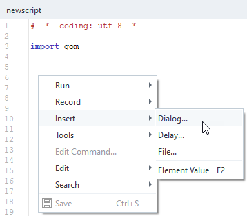
When a new dialog is inserted, a dialog Template, the target location of the dialog configuration and the dialog Type can be selected.
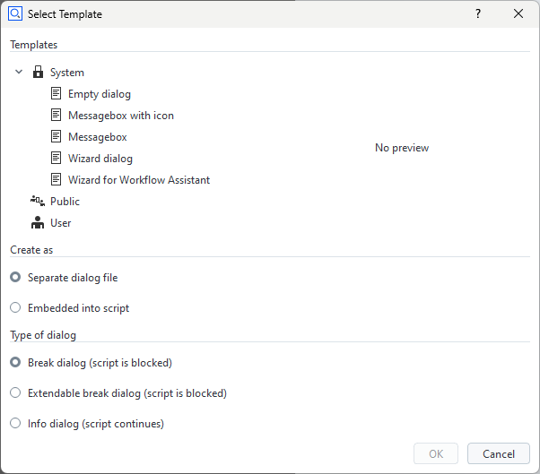
Some dialog Templates are provided by the system. Additional templates can be created by the user.
The options for placing a dialog configuration (see section Create as in the window above) are
Separate dialog file - default (recommended)
Embedded into script
The base filename of a dialog file is
dialog.gdlg, it can be renamed later. A dialog is stored as a JSON document internally.Example: Script with separate dialog fileRESULT=gom.script.sys.execute_user_defined_dialog (file='dialog.gdlg')
Example: Script with embedded dialogRESULT=gom.script.sys.execute_user_defined_dialog (dialog={ "content": [ [ { ... } ] ], "control": { "id": "OkCancel" }, "embedding": "always_toplevel", "position": "automatic", "size": { "height": 155, "width": 198 }, "sizemode": "automatic", "style": "", "title": { "id": "", "text": "Message", "translatable": True } })
The options for the dialog Type are
Break dialog (script is blocked) - default
Extendable break dialog (script is blocked)
Info dialog (script continues)
The dialog type is explained in section Executing dialogs
Dialogs are designed using the GUI based Dialog Editor.
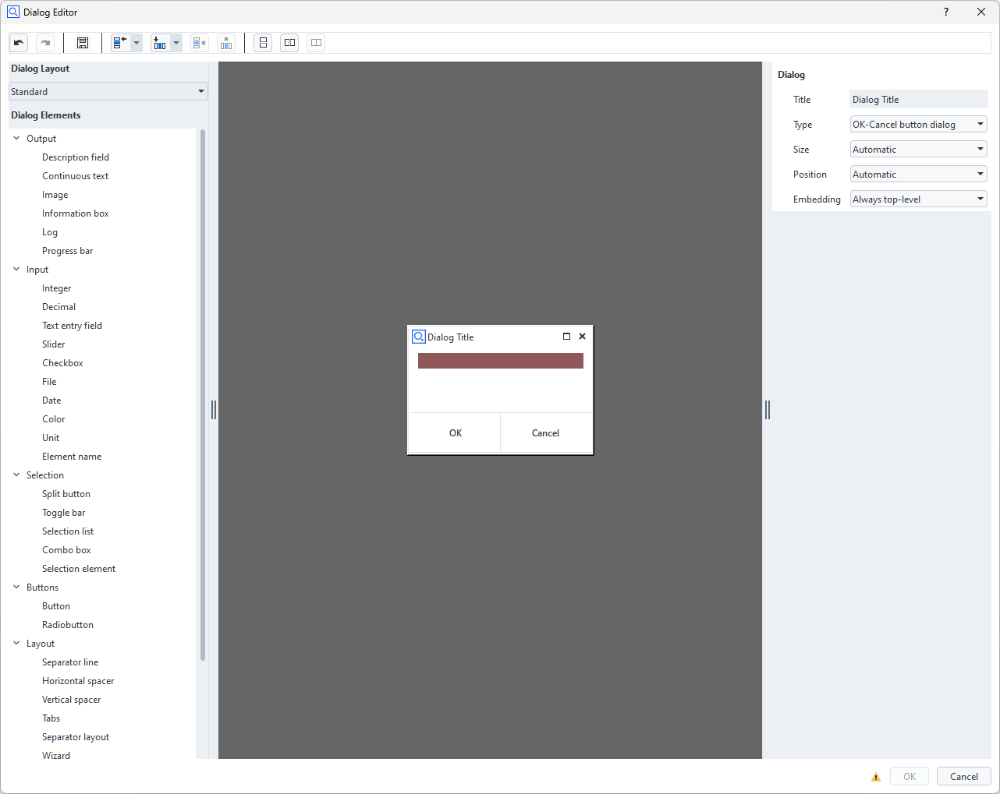
With Embedding in the dialog properties, control how a dialog is embedded in ZEISS INSPECT
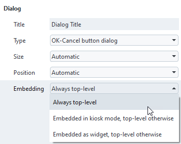
Note
The Dialog Editor is opened from the App Editor by
Selecting a dialog file (*.gdlg) in the App Explorer
Selecting a dialog definition embedded in a Python script
Using right mouse button → Insert → Dialog… in the script editor
Dialog layout
The Dialog Editor is using a grid based layout.
Elements can be inserted into the grid via drag and drop.
Editing the grid
Note
Editing the layout means changing the underlying grid.
Because the underlying layout is a grid, the following actions are possible:
Adding and removing rows and columns.
Merging and splitting rows and columns.
Tool button
Function
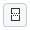
Split selected cells vertically
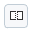
Split selected cells horizontally
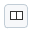
Merge selected cells
Selected cells are marked with a red overlay.
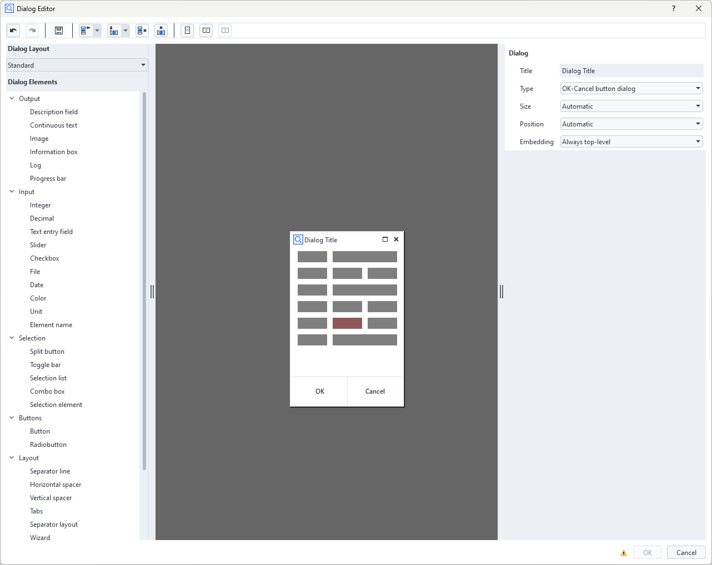
Spacers
Note
Spacers are empty spaces extending in either horizontal or vertical direction.
If a spacer is inserted into a cell, the cell claims the maximum available space in spacer direction.
All other cells share the remaining space.
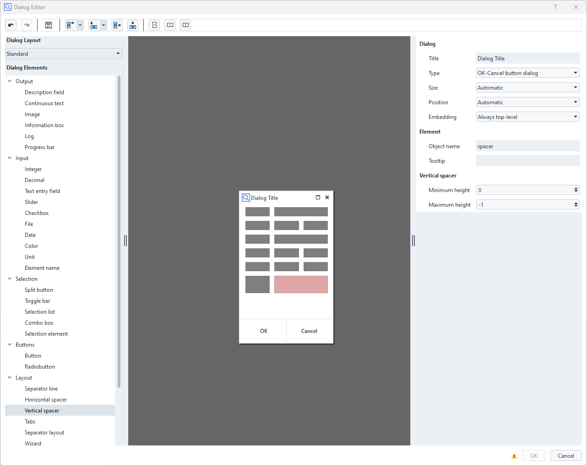
Layout widgets
See Dialog widgets – Layout for additional layout features.
Widgets
Inserting and removing widgets
The list of available widgets resides at the left of the Dialog Editor in the section Dialog Elements.
Widgets are inserted via drag and drop.
Newly dropped widgets overwrite existing widgets at the drop target cells.
A unique object name is assigned during insertion of a widget. This name is used to access the widget in the Python script.
Because each cell has to be filled with a widget, widgets can not be removed from the grid. To get rid of a widget
Another widget can be dragged and dropped onto the existing widget or
The widget cell can be merged with another cell.
Note
Removing widgets from the grid is not possible. Instead, they can be overwritten by other widgets.
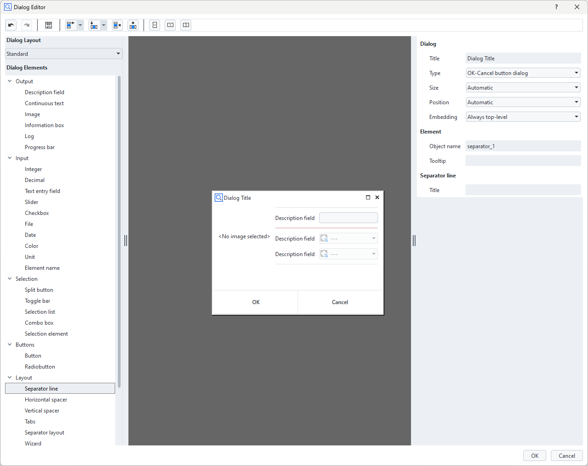
Configuring widgets
The properties of selected widgets can be edited in the Property Editor at the right side of the Dialog Editor.
Every widget has at least a unique Object name.
Additionally, various parameters depending on the widget type can be edited.
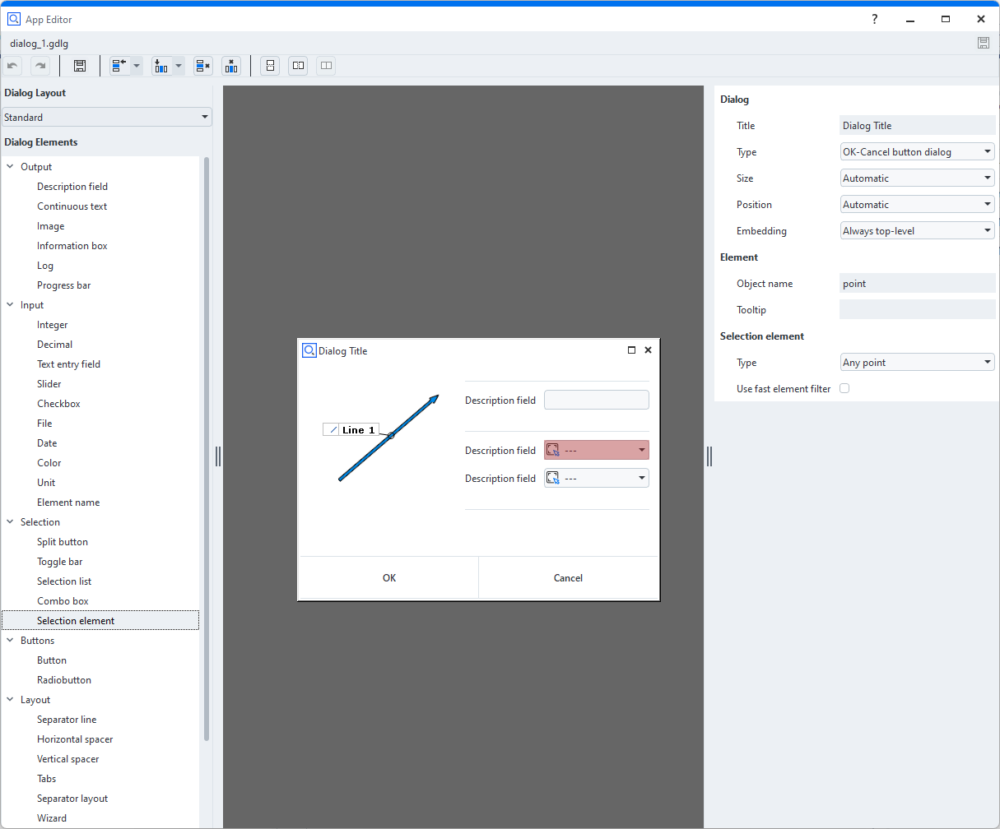
The definition of the dialog can be found in scriptingEditorExampleDialog.py
Editing already created dialogs
Creating a dialog leads to a script command with a dialog representation as JSON code, which can either be embedded or stored in an external dialog file (
*.gdlg).Double clicking onto the embedded dialog or the dialog file opens the Dialog Editor again.